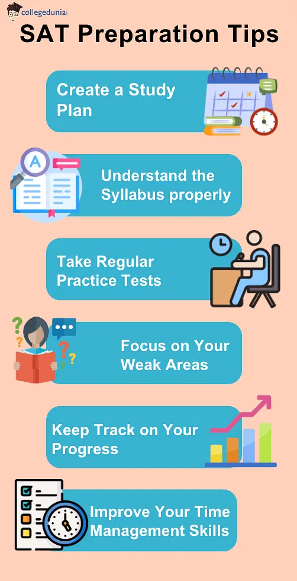
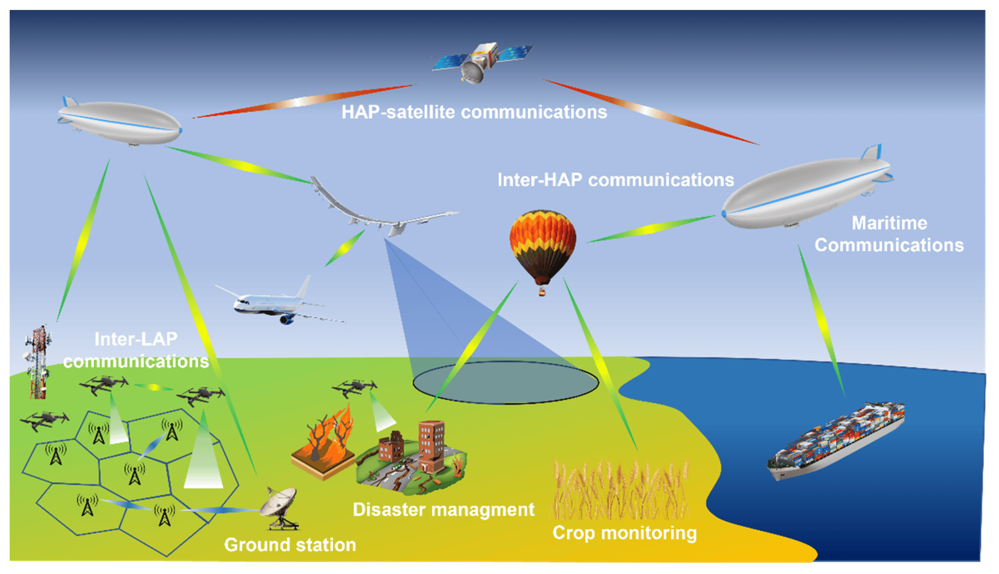

For int'l students, SAT subject tests to go by summer
The 'optional AP' is also the name of college-level courses taught in high schools, and the AP diploma is accepted globally at top universities. In countries like India, where national boards do not offer APs as an addition to the high school curricula,
independent centres will allow candidates to take the AP programme and the test to prove their academic prowess in top universities. The College Board, in a statement released to the press, said, "The expanded reach of AP and its
widespread availability means the subject tests are no longer necessary for students to show what they know." Top univs have found that essay scores, submitted separately, are not useful or essential for admission. Most Ivy Leagues
don't require the essay scores in the SAT score docket."The pandemic has shown us that colleges and universities have been able to admit students by looking at their high school grades, extracurricular activities and holding Interviews,"
Gupta said. In case of the essay too, top universities have found that essay scores, submitted separately, are not useful or essential for admission. Currently, most Ivy League colleges do not require the essay scores in the SAT
score docket.

|
Karan Gupta
While the Board said it will no longer offer subject tests to US students effective immediately, it will phase them out for international students by summer students.
"We're adapting to respond to the changing needs of students
and colleges. This change simply streamlines the process for students. statement released to the press, said, "The expanded reach of AP and its widespread availability means the subject tests are no longer necessary for students
to show what they know."
Karan Gupta, student counselor and an expert in college preparation, said the decision partly reflected the shifting environment in terms of standardized testing. Universities have found that essay
scores, submitted separately, are not useful or essential for admission. Currently, most Ivy League colleges do not require the essay scores in the SAT score docket. "We're adapting to respond to the changing needs of students
and colleges. This change simply streamlines the process for students who have other, more relevant opportunities to show they can write an essay as part of the work they're already doing on their path to college," said the Board.
Education
& Career Consultant in Mumbai, Karan Gupta Consulting – Every student Dr. Karan Gupta has counselled has succeeded in achieving admission to a prestigious overseas university. In addition, 90% of those students win some form of
scholarship or funding thanks to his direct experience working for the Admissions and Aid Funding department of a major US university.Dr. Karan Gupta, is one of India’s most successful education consultants.
|
SAT discards subject tests & essay to 'reduce burden', 50 mins shorter now
Mumbai: The College Board, the New York-based organization that runs the Scholastic Aptitude Test, has scrapped its subject tests and announced its decision to do away with the optional essay, thus making the main SAT 50 minutes shorter
in duration, reports Hemali Chhapia. Candidates are admitted based on SAT scores for undergraduate admissions in the US and to 40 universities in India, private and deemed. The subject tests were 20 multiple-choice standardized.
In case of the essay too, top universities have found that essay scores, submitted separately, are not useful or essential for admission. Currently, most Ivy League colleges do not require the essay scores in the SAT score docket.
"We're
adapting to respond to the changing needs. This change simply streamlines the process for students who have other, more relevant opportunities to show they can write an essay as part of the work they're already doing on their path
to college," said the Board.In case of the essay too, top universities have found that essay scores, submitted separately, are not useful or essential for admission. Currently, most Ivy League colleges do not require the essay
scores in the SAT score docket.
These hour-long 800-point tests were popular among Indians who completed high school from a local state or national board. The College Board, the standardized testing group, explained the doing
away of these tests, stating, “We’re reducing demands on students.” However, over the years, the College Board’s Advanced Placement Testing Programme overlapped in its aim with that of the subject tests. Advanced Placement Programs
or APs, which are longer and more intense, offer the opportunity to students to skip a prerequisite course typically taken in the first year of college and to start a higher-level course in the same subject.
The College Board,
in a press statement, said, “The expanded reach of AP and its widespread availability means the subject tests are no longer necessary for students to show what they know.” While the College Board said it will no longer offer subject
tests to US students effective immediately, it will phase them out for international students by summer.
|
APS Gains Ground in National Rankings

APS GAIN GROUND
- SAT scores for UG admissions in the US, 40 varsities in India Subject tests 20 MC questions for individual subjects.
- But Advanced Placement Testing Programme overlapped in its aim with subject tests questions for individual subjects, taken to improve a candidate's credentials for college admissions in the US. These hour-long 800-point tests are
popular among Indians who complete high school from a and two other people named in a note.
- "In April 2014 when the deal was registered the market value of the land was Rs 4.14 crore but Rashmi Thackeray and Manisha Waikar purchased it for only Rs 2.1 crore. In 2020-21 they paid another Rs 5.29 crore for the bungalows,"
Somaiya, who has been a BJP member of the Lok Sabha said.
Somaiya had earlier in complaint to the state chief electoral officer raised the issue of the 19 bungalows not being mentioned in the election affidavit filed by Chief Minister Uddhav Thackeray. The College Board, in a statement released to the press,
said, "The expanded reach of AP and its widespread availability means the subject tests are no longer necessary for students to show what they know." While the Board said it will no longer offer subject tests to US students effective
immediately, it will phase them out for international students by summer. Karan Gupta, student counselor and an expert in college preparation, said the decision partly reflected the shifting environment in terms of standardized
testing. The Board explained its decision by saying, "We're reducing demands on students." Over the years, the Board's Advanced Placement Testing Programme overlapped in its aim with that of the subject tests. APs, which are longer
and more intense, offer the opportunity to students to skip a prerequisite course typically taken in the first year and start a higher-level course in the same subject. To be phased out.
In case of the
essay too, top universities have found that essay scores, submitted separately, are not useful or essential for admission. Currently, most Ivy League colleges do not require the essay scores in the SAT score docket. APs, which
are longer and more intense, offer the opportunity to students to skip a prerequisite course typically taken in the first year and start a higher-level course in the same subject. To be phased out. "The expanded reach of AP and
its widespread availability means the subject tests are no longer necessary for students to show what they know." While the Board said it will no longer offer subject tests to US students effective immediately, it will phase them
out for international students by summer. Karan Gupta, student counselor and an expert in college preparation, said the decision partly reflected the shifting environment in terms of standardized testing. Neha Singh, co-founder
of Tracxn, commented, “Despite four consecutive half-year periods of declining funding since H1 2022, we are now showing signs of stabilisation and an upward trend. India’s robust performance as the fourth-highest-funded country
in the tech startup ecosystem is encouraging. From emerging developments in retail and enterprise applications to pioneering advancements in financial technology (fintech), Indian startups are transforming industries and driving
economic growth.” According to the India Tech Semi-Annual Funding Report H1 2024 by Tracxn, Indian technology (tech) startups raised $4.1 billion in H1 2024, marking a 4 per cent increase from $3.96 billion in H2 2023. However,
this represents a 13 per cent decrease compared to the $4.8 billion raised in H1 2023. India, which ranked as the fourth-highest-funded country globally in the tech startup landscape, slipped a position as China advanced in the
pecking order in terms of raising higher funds. China raised a total of $6.2 billion in H1 2024, becoming the third-highest funded country. In H1 2023, India had surpassed China to be the third-highest fundraising country globally.
The funding landscape across different stages showed varied trends: seed-stage funding increased to $455 million, up by 6.5 per cent from H2 2023 but down 17.3 per cent from H1 2023. Early-stage startups maintained steady funding
of $1.3 billion, consistent with H2 2 3.8 per cent increase from H2 2023, althou$275 million Series F round.
|